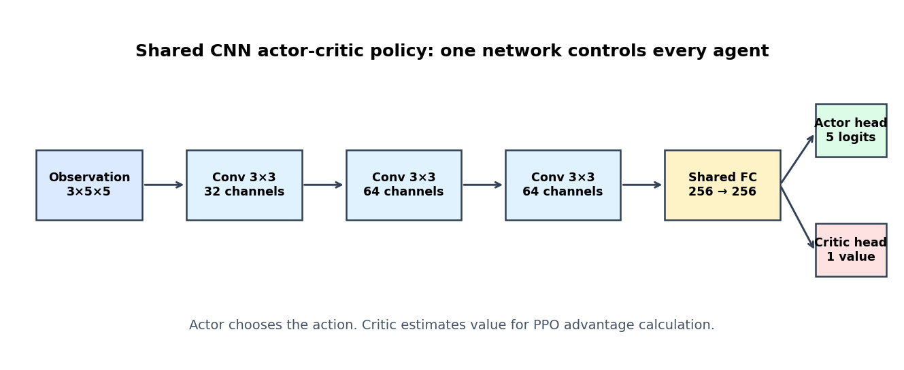
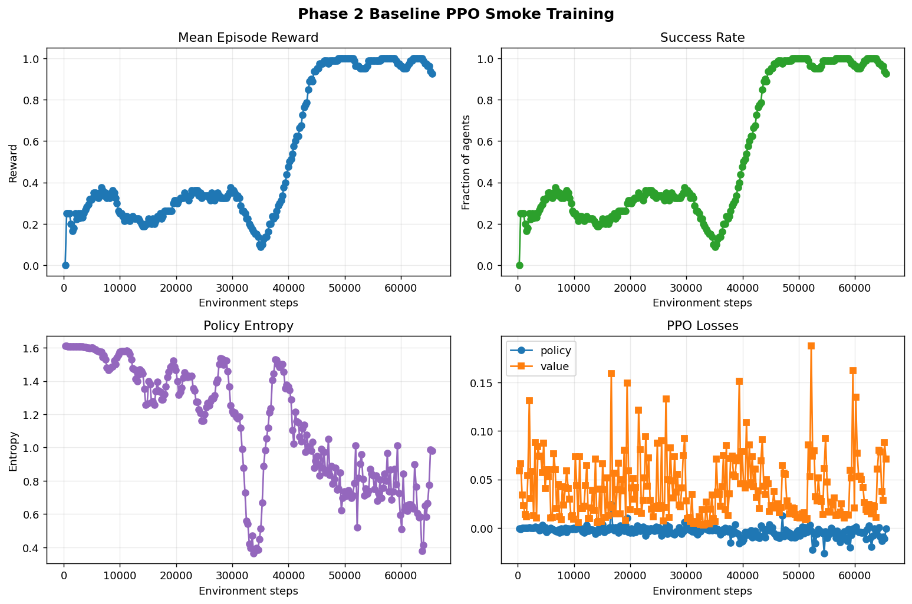
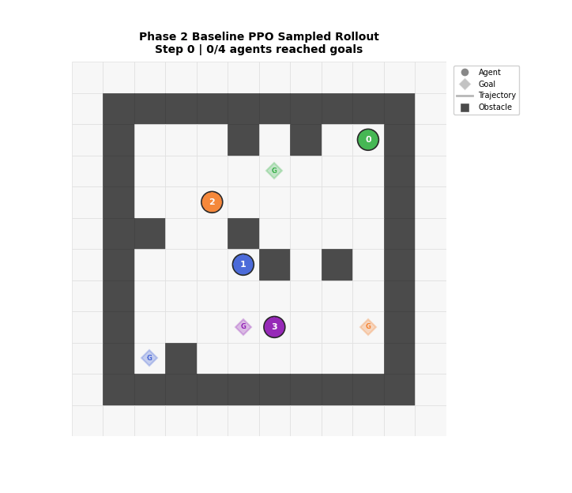
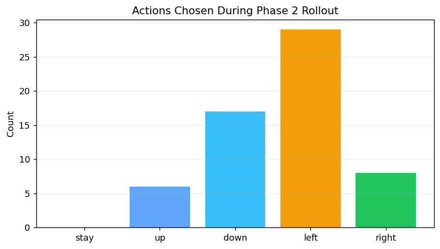
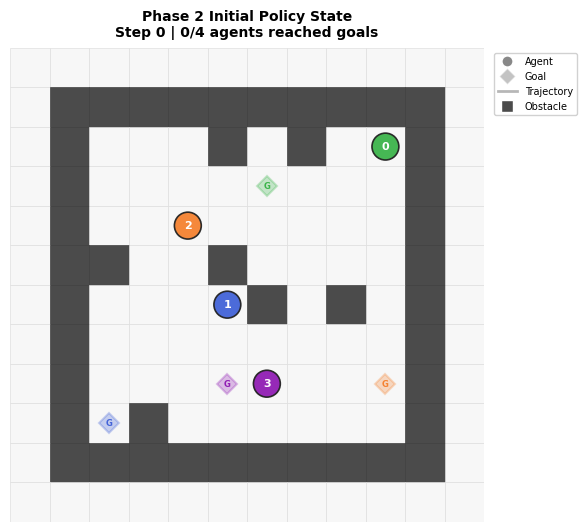
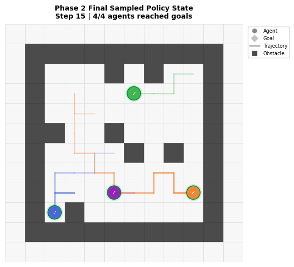

Generated at 2026-04-26 10:53:42 using grasp_splats.
Phase 2 adds the baseline PPO policy: a shared CNN actor-critic, rollout buffer, clipped PPO update, checkpoint saving, clean evaluation, and visual inspection of a policy rollout.
Status: smoke training completed. This is a wiring check, not the final Main run.
| Field | Value |
|---|---|
| Agents | 4 |
| Map size | 8×8 |
| Obstacle density | 0.1 |
| Max steps | 64 |
| Total training timesteps | 65536 |
| Evaluation mode | sampled PPO policy (deterministic=False) |
| Success target | 0.95 (met) |
| Evaluation success rate | 0.965 |
| Evaluation makespan | 16.8 |
| Rollout success count | 4 / 4 |






Please inspect the architecture diagram, training curves, and rollout GIF. This run now uses enough smoke-training steps to reach the near-100% baseline target on the easy sanity environment. If this looks right, the next step is to run the longer Quick baseline, then the Main baseline.
Raw data: phase2_baseline_summary.json. Checkpoint: /home/carl_ma/Riad/MS/CS830/project/models/phase2_smoke_baseline/final_policy.pt.